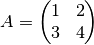
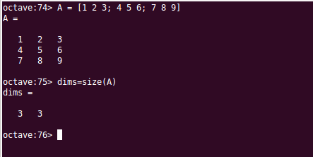
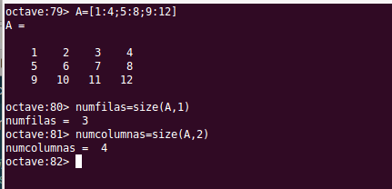
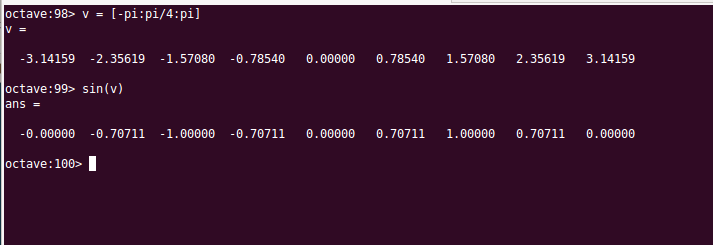

Matrices¶
En Octave es fácil definir una matriz. No es necesario determinar las dimensiones a priori, Octave las adaptará a los datos introducidos.
Para introducir una matriz por teclado bastará ir tecleando el valor de las componentes encerradas entre corchetes. Se teclea cada fila separada de la anterior por punto y coma ‘;’, y , dentro de cada fila, los elementos se separarán con coma ‘,’ o espacio. Por ejemplo, el siguiente código Octave:
A = [1, 2; 3, 4]
dará lugar a que Octave asigne a la variable A la matriz de dos filas y dos columnas siguiente:

Note
Para separar elementos dentro de una fila se puede utilizar indistintamente la coma o la barra espaciadora. Para separar una fila de otra se puede utilizar indistintamente el punto y coma o cambiar de línea en pantalla pulsando la tecla intro.
Rangos y matrices¶
Todo lo dicho en el apartado de Vectores en relación a cómo definir series de datos equiespaciados a base de rangos o con la función linspace() es aplicable a la definición de matrices. Habrá que tener la precaución de que las filas deben ser todas con el mismo número de columnas:
A = [1:10; 11:20]
% Elresultado será la matriz A= [1 2 3...9 10 ; 11 12 ... 19 20]
Lectura de las componentes de una matriz¶
Para leer el valor de una componente de una matriz se pone el nombre de la variable que guarda la matriz y a continuación, entre paréntesis, la fila y la columna de la componente buscada. La primera fila y la primera columna tienen el índice 1, y también aquí podemos referirnos abreviadamente al índice de la última fila o columna de la matriz utilizando la claúsula end:
A = [1,2; 3, 4]
A(1,1)
% El resultado será: ans = 1
A(1,end)
% El resultado será: ans = 2
A(end,end)
% El resultado será: ans = 4
Analogamente a los explicado en el caso de los vectores, podemos utilizar rangos para extraer una serie de valores de la matriz. En este caso el resultado será una matriz (submatriz) con el numero de filas y columnas acorde a los rangos solicitados:
A = [1,2,3,4; 5,6,7,8; 9,10,11,12; 13,14,15,16]
A(2:3, 2:3)
% Elresultado será la matriz [6, 7; 10, 11]
A([2 4],[2 4])
% Elresultado será la matriz [6, 8; 14, 16]
En el caso de las matrices existe una construcción especial para referirse a todos los elementos de una fila o columna y es utilizando los dos puntos ‘:’ como índice:
A = [1,2,3,4; 5,6,7,8; 9,10,11,12; 13,14,15,16]
A(:,3)
% El resultado será la columna 3
A(2,:)
% El resultado será la fila 2
Internamente Octave almacena las matrices como un vector columna, poniendo una columna tras la otra. Es posible referirse a un elemento de una matriz mediante un único índice que en este caso hará referencia a la posición del elemento en el vector columna resultante del almacenamiento de la matriz en una única columna:
A = [1, 2, 3; 4, 5, 6; 7, 8, 9]
A(1) % ans = 1
A(2) % ans = 4
A(3) % ans = 7
A(4) % ans = 2
A(5) % ans = 5
A(6) % ans = 8
A(7) % ans = 3
A(8) % ans = 6
A(9) % ans = 9
Direccionamiento indirecto de matrices a partir de vectores¶
Los índices de los elementos que queremos extraer de una matriz los podemos indicar mediante un vector, explicitamente o que esté guardado en memoria:
A = [1, 2, 3; 4, 5, 6; 7, 8, 9]
v1 = [1 2]
v2 = [1 2]
A(v1,v2)
% El resultado será la matriz [1,2; 4,5]
A([1 2],[1 2])
% El resultado será la matriz [1,2; 4,5]
Eliminación de filas o columnas¶
Podemos eliminar una fila o columna de una matriz mediante la siguiente construcción, que asigna el valor [ ] a los elementos correspondientes:
A = [1, 2, 3; 4, 5, 6; 7, 8, 9]
A(1,:) = []
% Se elimina de la matriz A la primera fila. A queda como matriz 2x3
A = [1, 2, 3; 4, 5, 6; 7, 8, 9]
A(:,3) = []
% Se elimina de la matriz A la tercera columna. A queda como matriz 3x2
Operaciones con matrices¶
- Suma +:
- Resta +:
- Producto *:
- Producto elemento a elemento .*:
- Exponenciación ^:
- Exponenciación elemento a elemento .^:
- División /:
- División elemento a elemento ./:
- División invertida \:
- División invertida elemento a elemento .\:
- Operador traspuesta ‘:
Matrices predefinidas¶
Hay varias funciones utilitarias que permiten construir matrices de tipos particulares:
- eye(n) Forma la matriz identidad cuadrada de dimensión n
- zeros(n) Forma una matriz de ceros cuadrada de dimensión n
- zeros(m,n) Forma una matriz de ceros de m filas y n columnas
- ones(n) Forma una matriz de unos cuadrada de dimensión n
- ones(m,n) Forma una matriz de unos de m filas y n columnas
La función size()¶
La función size(), recibe como parámetro una matriz y nos devuelve un vector de dos componentes con el número de filas y el número de columnas de la matriz. La forma de la función es:
Un ejemplo de utilización podría ser:
{kind=link}
La función size() admite un segundo parámetro que si vale 1 nos devolverá el número de filas y si vale 2 nos devolverá el número de columnas:
{kind=link}
Inversa, determinante y traza de una matriz¶
Existen funciones específicas para calcular la inversa, el determinante y la traza de una matriz cuadrada:
- inv()
- det()
- trace()
Si la matriz es singular se producirá un error que será indicado por Octave
Funciones max(), min(), sum() y prod()¶
La función max(), cuando se aplica a un vector, nos devuelve el valor del máximo elemento del vector, cuando se aplica a una matriz, nos devuelve un vector fila con el maximo elemento de cada columna de la matriz.
La función min() funciona de manera análoga a la función max() pero devolviendo valores mínimos.
La función sum(), cuando se aplica a una matriz, devuelve un vector fila en la que cada elemento es la suma de los elementos de la columna correspondiente de la matriz pasada como argumento.
La función prod() devuelve en una fila el producto de los elementos de las columnas de la matriz original.
Aplicación de funciones a matrices¶
En general, cuando pasemos una matriz o un vector como argumento de una función, nos devolvera una matriz o vector de las mismas dimensiones con la función aplicada elemento a elemento. Por ejemplo:
{kind=link}
Aplicación de operadores lógicos a matrices¶
Los operadores lógicos (&, |, xor()) o relacionales (<, >, <=, >=, ==, ~=) se pueden utilizar cuando uno o los dos operandos son matrices.
Cuando aplicamos un operador lógico o relacional a una matriz, el operador se aplicará elemento a elemento, obteniendo como resultado una matriz de las mismas dimensiones y cuyas componentes son valores logical, resultado de aplicar la operación al elemento.
A = [1, 2; 3, 4];
B = [1, 0, 3, 0];
C = A & B
% El resultado será: C = [1 0; 1 0]
D = A > 2
% El resultado será: D = [0 0; 1 1]
Se pueden utilizar las matrices resultado para generar submatrices mediante referenciación indirecta, esto es, utilizando la matriz de valores logical obtenida como matriz que define los índices que queremos extraer de la matriz original, de la siguiente manera:
A = [1, 2; 3, 4];
B = [1, 0, 3, 0];
C = A & B
% El resultado será: C = [1 0; 1 0] (Matriz de elementos logical)
A(C)
% El resultado será: ans = [1; 3] (Vector columna de doubles)
D = A > 2
% El resultado será: D = [0 0; 1 1] (Matriz de elementos logical)
A(D)
% El resultado será: ans = [3; 4] (Vector columna de doubles)
E = A > 1
% El resultado será: E = [0, 1; 1 1] (Matriz de elementos logical)
% El resultado será: ans = [3; 2; 4] (Vector columna de doubles)
El resultado de la referenciación indirecta aplicada a una matriz es un vector columna obtenido en el orden en que almacena Octave la matriz, que es con las columnas almacenadas una tras otra.
Cuando la matriz que operamos es un vector fila, la refrenciación indirecta nos devuelve un vector fila, no columna.
Funciones utilitarias para matrices¶
- repmat(A,m,n) Devuelve una matriz resultado de copiar la matriz A en m filas y n columnas. Si A es un escalar, el resultado será una matriz mxn con valor A en todos los elementos
- diag(A) Siendo A una matriz, devuelve un vector columna con los elementos de la diagonal de A
- diag(v) Siendo v un vector, devuelve una matriz diagonal con los elementos de v ocupando la diagonal.
- blkdiag(A,B) Crea una matriz diagonal de submatrices (por bloques) a partir de las matrices A y AB